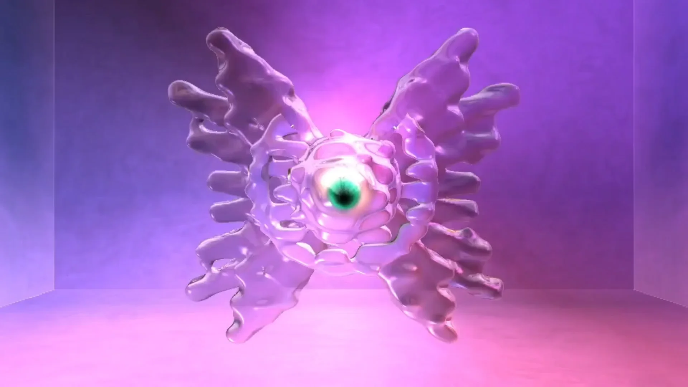
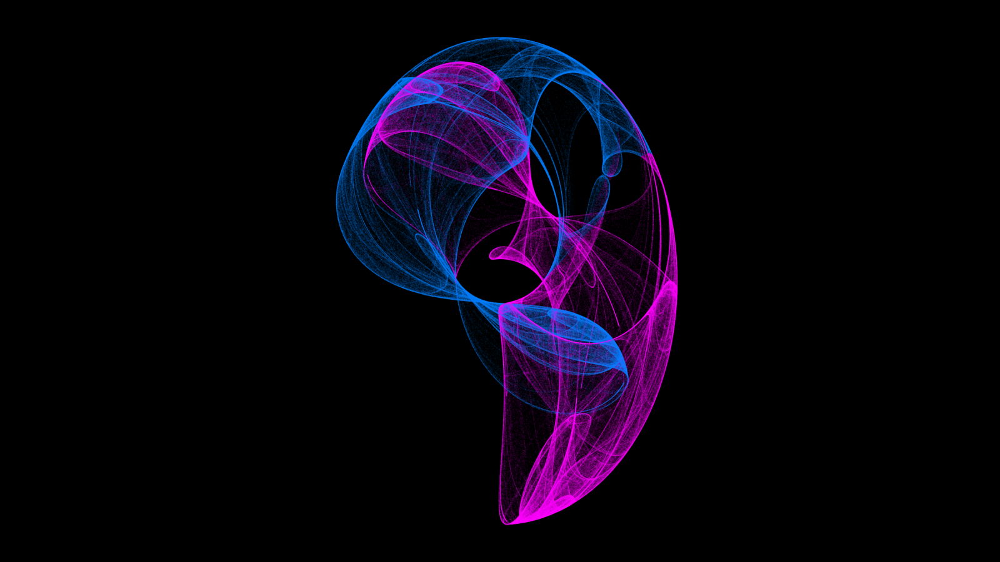
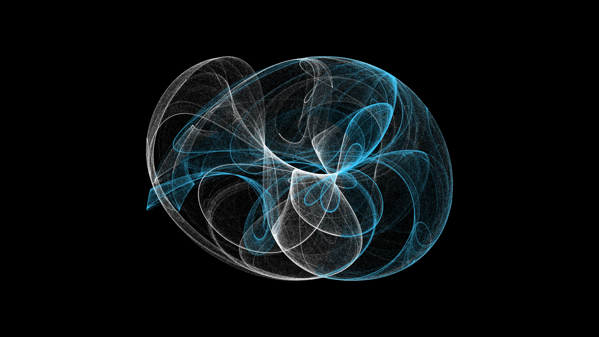
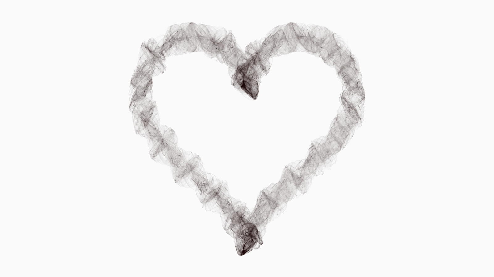
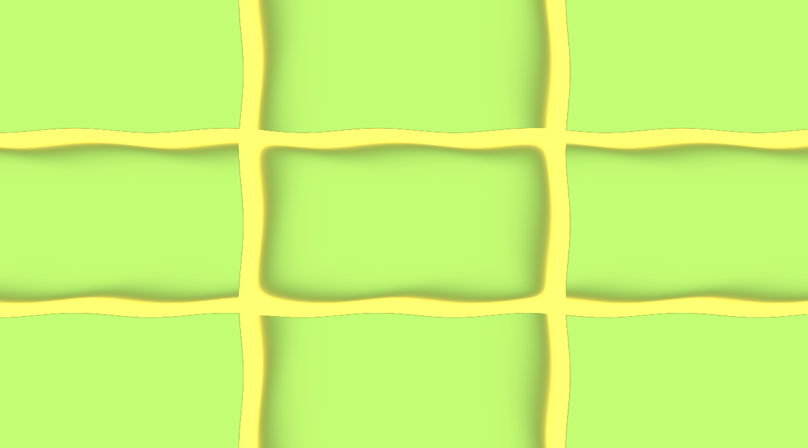
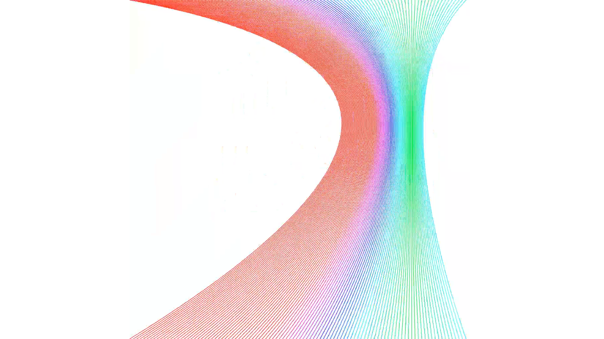
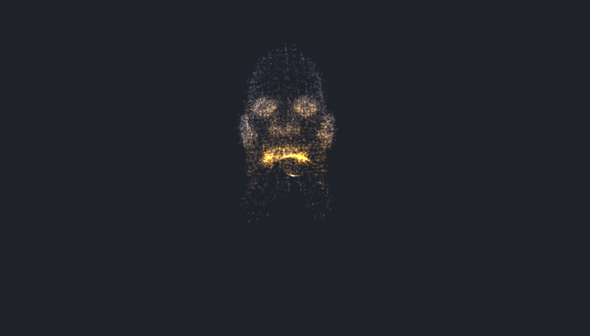
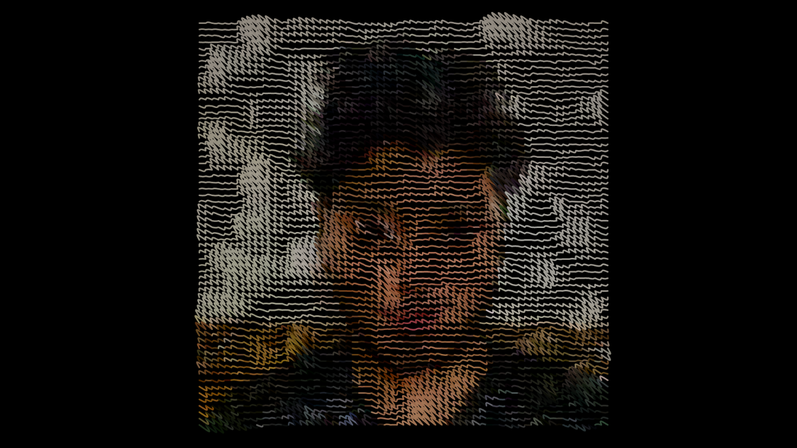

A Raymarched Art of Seraph the Angel. Learnt more about raymarching
and lighting equations.

Clifford Attractor based on Chaos Theory. Used P5.JS to plot 2
Million Points with Colors.

Another Strange Attractor, Colors by calculating angle between
previous point and current point vector.
Heart art drawn by having bezier lines coming out along the path
tangent of the parametric heart curve. Used P5.JS.

Clifford Attractor made to follow the path of Heart Curve. 1 Million
Points. Used P5.JS

Mac Genie Animation recreated as a GLSL shader. Used in a AR Lens
for frame capture effect.

Distorting Lines made in GLSL shader. Given 3D depth effect by using
a diffusing buffer.

A set of bezier curves following mouse pointer and changing colors
according to distance.

Used Three.js to populate 3D points in a Head 3D model and projected
it onto a Sphere with Animation.

P5.JS procedural image effect with animated bezier curves. Sampled
image colors for every curve and animated using a gradient noise.